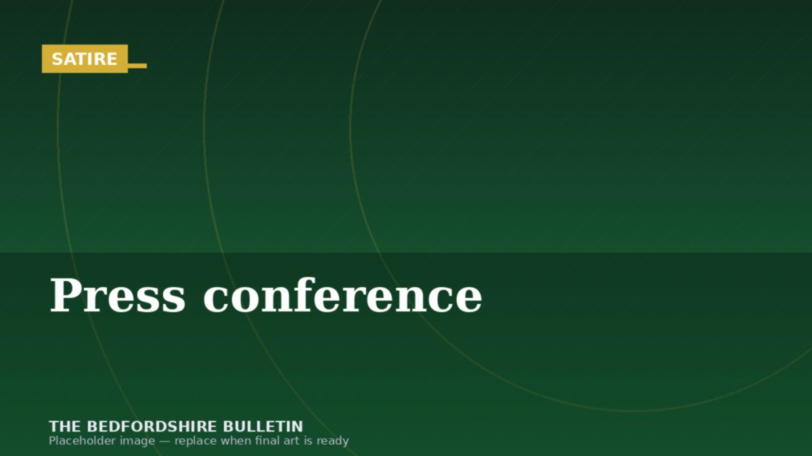

Church Fete Planning Enters Second Year; Actual Fete Now 47% Likely
SATIRE — this article is a work of fiction created for comedic effect. Names, quotes, and events are invented.

🎪
🎪A planning committee meeting, possibly about scones. Image: illustrative.
What began last June as a straightforward proposal to hold a summer garden fete at St Bartholomew's Church has evolved into an elaborate bureaucratic saga rivaling the filming of a three-hour epic, except with significantly more discussion of Victoria sponge cakes and a substantially lower chance of a satisfying conclusion.
The Planning Committee, comprising seven volunteers aged 62 to 89, has met 16 times since the initial proposal. Progress indicators suggest that by the year 2031, they may finalize whether the fete will take place on a Saturday or a Sunday.
"The core question," explained committee chair Mrs Dorothy Featherstone, adjusting her reading glasses with the weight of Sisyphean burden, "is fundamentally about the nature of our commitment to tradition versus the logistical implications of parking."
The fete, originally scheduled for July 2025, did not occur. Nor did it occur in August, September, or indeed any month following, primarily because the committee spent January through March 2025 deliberating the correct terminology for the event.
"Is it a fete, a fair, a garden party, or a summer social?" minutes from the February meeting record. "The distinction is critical for insurance purposes and possibly for the vicar's spiritual wellbeing."
A motion to establish a subcommittee to explore these definitions was carried 6-1. The subcommittee has thus far held no meetings, as its chair, Mr Edmund Phillips, was "traveling to his daughter's wedding" and then "recovering from the wedding," and is currently "preparing for the possibility of another family event sometime in the future."
The committee did successfully decide upon the event's official name: "St Bartholomew's Summer Community Gathering of Seasonal Nature, Featuring Elements of Traditional English Garden Entertainment Activities (Pending Approval)." A motion to shorten it to "the fete" was tabled indefinitely.
Discussions then shifted to the central matter of cakes.
"Can we serve both jam-first AND cream-first scones?" asked committee member Brenda Hutchinson in April. This single question spawned 73 minutes of debate, the circulation of three competing position papers, and the commissioning of a historical research task that remains incomplete.
"It's a matter of tradition," noted one faction.
"It's a matter of common sense," countered another.
"It's actually a matter of cream supplier availability," interjected a third voice from the back, which everyone agreed to ignore.
The question of whether to charge 50p or 60p per slice of cake generated five separate discussion sessions and a memorable moment in May when committee member Geoffrey Wilson stormed out, declaring "This is madness!" He has since been replaced by his wife, Patricia, who shares his passion for procedural governance but greater tolerance for cake-related ambiguity.
Parking remains unresolved. The church has access to a small car park accommodating approximately 12 vehicles. The committee's latest estimate suggests the fete might attract "possibly dozens" of attendees.
"We could implement a parking rotation system," suggested one member. "Attendees park, enjoy one activity — say, consuming a scone — and then vacate to allow others to park."
This idea was deemed "architecturally interesting but logistically nightmarish" and has been forwarded to a new subcommittee, which will convene sometime in the third quarter of 2026.
The budget remains undecided. Initial estimates of £200 have expanded to £4,500 after the inclusion of "professional event coordination," "heritage documentation," and "contingency funds for yet more committee meetings."
"We could just have a fete," suggested the vicar mildly at June's meeting. "Just people, cakes, and a garden. Perhaps some bunting?"
The room fell silent.
"We'll need to discuss that as a formal motion," Mrs Featherstone finally said, scribbling a note. "I propose we establish a bunting subcommittee to explore viability. All in favor?"
Six hands rose. Mr Phillips abstained, as he was checking his email.
Current projections suggest the St Bartholomew's Summer Community Gathering of Seasonal Nature, Featuring Elements of Traditional English Garden Entertainment Activities (Pending Approval) will occur sometime between August 2026 and May 2027, assuming the committee approves the vicar's radical proposal about bunting.
Ticket sales open never.
Have a tip or correction? Email tips@bedfordshirefreepress.co.uk